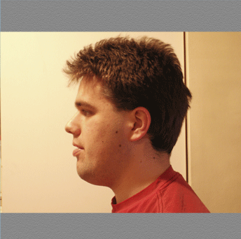

Arcimboldo-Styled Self Portrait

This is a Self-Portrait project. For this project, the assignment was to express myself. Since I Like vegatables and fruits, I decided to do my Arcimboldo style self portrait. The first button is Photograph. The Image Portrait button is a self portrait that I created using pictures of fruits and vegetables that I downloaded from the Internet. The Digi-Paint button is a self portrait where I used the brush and eyedropper tools to paint the images.